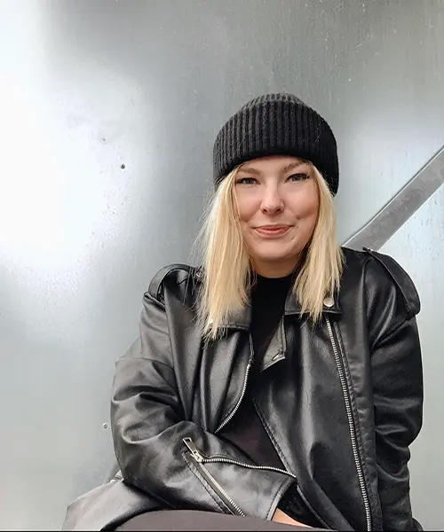
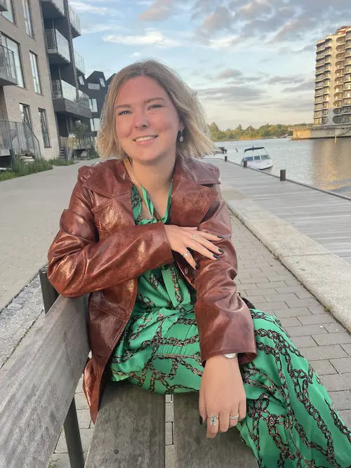
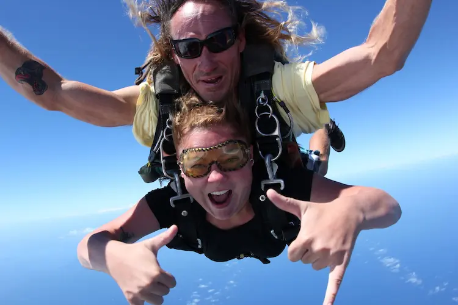

Lidt omkring mig
Hvem er jeg?
Hvem er jeg? Det er et godt spørgsmål. Jeg hedder Josephine og er 25 somre. I dag lever jeg studie livet og lærer værktøjer til virkeligheden som jeg glæder mig til at kunne bruge. Jeg har det sidste semester lært at opsætte website igennem mit eget domæne, samt design principper og ikke mindst undersøgelserne som kan være hjælp til at ramme den kundeoplevelse som er ønsket.
Uddannelsen MMD
Uddannelsen MMD har været udfordrende samt utrolig lærerig. Jeg valgte at søge ind da jeg var interesseret i det som lå bag. Når man ser en webside så tænker man sjældent over hvordan den er opsat. Men da jeg begyndte at arbejde mere med sociale medier hos Fitness World så kom interesse for viden om alt det bagved. Jeg vil derfor også tage min nye viden med videre, her i blandt forståelsen for HTML samt CSS. Det vigtigste for forståelsen for kodning ser jeg dog også som værende kundeoplevelsen. Derfor er det vigtigt at finde frem til den rette data inden man påbegynder kodningen. Dette kan gøre gennem desk research samt observation. Dette har jeg også gjort brug af i dette projekt. Min stil, er meget minimalistisk og have et overblik over det som man kigger på. Jeg har derfor prøvet at udfordre mig selv, men samt have et site som er roligt og nemt at navigere rundt i.
Udannelse i 2018
Da jeg kom hjem fra min jordomrejse, startede jeg min uddannelse ved Samsøe & Samsøe og i 2020 blev jeg færdiguddannet salgs assistent. Corona ramte landet, og jeg måtte søge nye veje efter min uddannelse. Her endte jeg ved Fitness World's kundeservice. Jeg sad blandt andet med de sociale medier samt kundehenvendelser. Jeg fandt ud af at det var kundeoplevelsen som interreserede mig og jeg undersøgte muligheder for det perfekte studie til mig hvor jeg kunne lære mere om kundens ønsker og deres oplevelse. Her fandt jeg frem til KEA, grundet mange udfordringer med skole tidligere var det min kæreste som prikkede til mig og fik mig til at søge ind.
Et minde fra jordomrejsen
Jeg blev i 2017 færdig med gymnasiet, hvor jeg hurtigt fik samlet nok penge op til at rejse jorden rundt i 4 måneder med Dansk Studie Center. Her rejste jeg blandt andet til, Vietnam, Cambodja, New Zealand og Costa Rica.
Mit bedste minde
Når folk spørg om mit bedste minde så vil jeg klart altid sige, at det har været da jeg tilbage i 2008 var til Bruce Springsteen koncert. Et godt minde som sluttede af med at jeg sang med selveste bossen ham selv i Parken foran alle tilskuere. Herunder kan i med glæde se og høre mit musikalske talent.